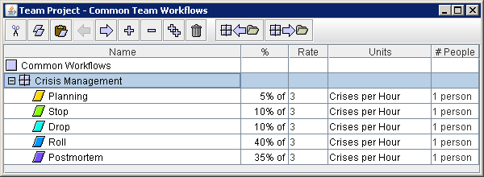
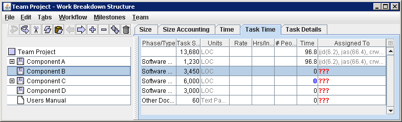
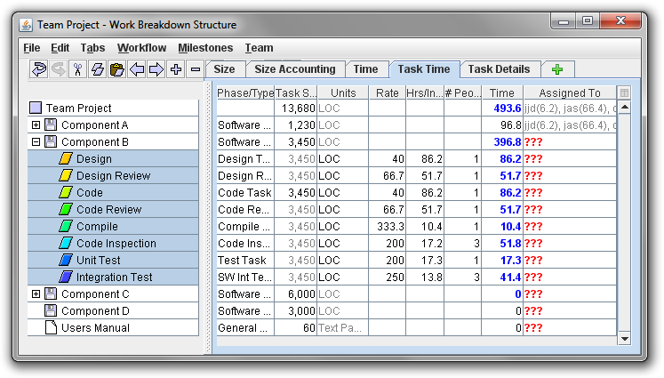

and the following WBS:

If you were to highlight Component B and choose Simple Process from the Workflow menu, it would produce the following WBS:

You can also insert a workflow by highlighting a component and typing
Ctrl-W (or Command-W on Mac OS X). If you make a mistake (for example,
inserting the workflow under the wrong WBS item), you can always undo it using
the undo button ( ).
).
It is important to note that the items inserted into your WBS via this method are copies of the items in the defined process or workflow. As a result, you can freely edit the inserted items (for example: deleting steps that are unnecessary for the current situation, subdividing steps, etc) without affecting the process/workflow definition. This also means, however, that if you use the Common Team Workflows Editor to alter the definition of a process/workflow later, those changes will not automatically be propagated into the team's WBS. For example, if you were to open the Common Team Workflows Editor and delete the Compile step from the definition of the "Simple Process" workflow shown above, that change would not automatically affect the list of tasks under Component B. It would continue to include a Compile step.
If you make a change to a workflow and you would like that change to propagate into the WBS, use the "Reapply Workflow" option on the workflow menu. This option can be used in several ways:
Reapplying a workflow will make the following changes:
You can optionally choose to update task time estimates based on the latest workflow rates/percentages.